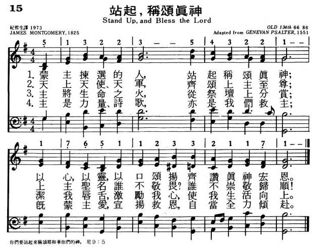
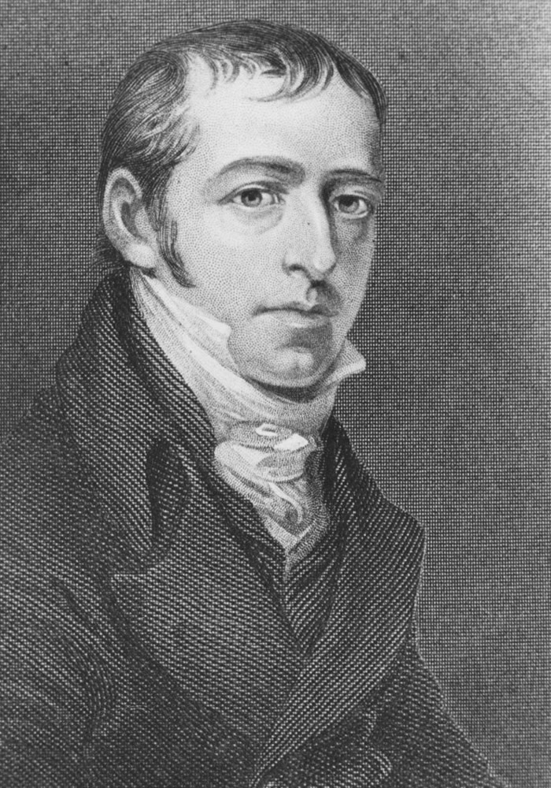

|
|
|
|
1 Stand up, and bless the Lord, 2 Tho' high above all praise, 3 O for the living flame, 4 There, with benign regard, 5 God is our strength and song, 6 Stand up and bless the Lord, |
015站起，称颂真神
1.蒙主拣选的人，站起称颂真神；
以心、以灵、以口颂扬，齐赞真神宏恩 2.天上天使、天军，齐颂上主至尊； 上主圣名谁不敬畏？ 谁不崇敬归顺！ 3.主将生命之火，从祭坛上分赏； 洁我唇舌，激励我心，使我生活向上。 4.主是力量、诗歌，亦是我们救主； 既蒙主爱，宣扬救恩，自当全力倾赴。 |
|
https://www.mred365.cn/szxg/7018.html
 https://hymnary.org/hymn/HTLG2017/page/20
|
|
|
|
|


https://www.youtube.com/watch?v=-M0VeLP01ps -
https://www.youtube.com/watch?v=LX2BsVm8__Q -
https://www.youtube.com/watch?v=hJ34W-gJONs
| Text: | Stand Up, and Bless the Lord |
| Author: | James Montgomery |
| Tune: | ST. MICHAEL |
| Adapter: | William Crotch |

Notes
Stand up and bless the Lord. J. Montgomery. [Praise and Thanksgiving.] Written for the Sheffield Red Hill Wesleyan Sunday School Anniversary, held on Mar. 15, 1824; and also used at the Whitsuntide gathering of the Sheffield Wesleyan Sunday School Union, on the Whit-Monday of that year. The opening lines of the original read:—
"Stand up and bless the Lord,
Ye children of His choice."
When Montgomery included it in his Christian Psalmist, 1825, No. 558, in 6 stanzas of 4 lines, he altered this opening to:—
"Stand up and bless the Lord,
Ye people of His choice:"
and this was repeated in his Original Hymns, 1853, No. 86. In J. H. Thorn's Hymns, &c, 1858, it begins, “Arise, and bless the Lord: " and in the American Songs for the Sanctuary, N. Y., 1865, "0 Thou above all praise" (stanzas ii. altered). It is in extensive use in all English-speaking countries, and usually the 1825 text is followed.
-- John Julian, Dictionary of Hymnology (1907)
Tune Information
| Title: | ST. MICHAEL (Genevan) |
| Composer: | Louis Bourgeois |
| Meter: | 6.6.8.6 |
| Incipit: | 51322 35432 21176 |
| Key: | A♭ Major |
| Source: | Genevan Psalter, 1543;Day's Psalter, 1562 |
| Copyright: | Public Domain |
| Short Name: | Louis Bourgeois |
| Full Name: | Bourgeois, Louis, 1510-1561 |
| Birth Year: | 1510 |
| Death Year: | 1561 |
Louis Bourgeois (b. Paris, France, c. 1510; d. Paris, 1561). In both his early and later years Bourgeois wrote French songs to entertain the rich, but in the history of church music he is known especially for his contribution to the Genevan Psalter. Apparently moving to Geneva in 1541, the same year John Calvin returned to Geneva from Strasbourg, Bourgeois served as cantor and master of the choristers at both St. Pierre and St. Gervais, which is to say he was music director there under the pastoral leadership of Calvin. Bourgeois used the choristers to teach the new psalm tunes to the congregation.
The extent of Bourgeois's involvement in the Genevan Psalter is a matter of scholarly debate. Calvin had published several partial psalters, including one in Strasbourg in 1539 and another in Geneva in 1542, with melodies by unknown composers. In 1551 another French psalter appeared in Geneva, Eighty-three Psalms of David, with texts by Marot and de Beze, and with most of the melodies by Bourgeois, who supplied thirty four original tunes and thirty-six revisions of older tunes. This edition was republished repeatedly, and later Bourgeois's tunes were incorporated into the complete Genevan Psalter (1562). However, his revision of some older tunes was not uniformly appreciated by those who were familiar with the original versions; he was actually imprisoned overnight for some of his musical arrangements but freed after Calvin's intervention. In addition to his contribution to the 1551 Psalter, Bourgeois produced a four-part harmonization of fifty psalms, published in Lyons (1547, enlarged 1554), and wrote a textbook on singing and sight-reading, La Droit Chemin de Musique (1550). He left Geneva in 1552 and lived in Lyons and Paris for the remainder of his life.
Bert Polman
LX1785
Stand Up, And Bless The
Lord
015站起，称颂真神
颂新
这首「站起．称颂真神」作于 1824 年，是特别为英国 Sheffield 地区的主日学周年纪念写的。乃根据尼希米记
9:5：「你们要站起来称颂耶和华你们的神永世无尽。耶和华阿，祢荣耀之名，是应当称颂的，超乎一切称颂和赞美。」的经文为背景。
https://www.mred365.cn/szxg/7018.html
History of Hymns: "Stand Up and Bless the Lord," by James Montgomery
BY BETH SPAULDING

James Montgomery
“Stand Up and Bless the Lord”
by James Montgomery;
The United Methodist Hymnal, No. 662
Stand up and bless the Lord,
ye people of his choice;
stand up and bless the Lord your God
with heart and soul and voice.
James Montgomery (1771-1854) was a Moravian orphan who grew up to be a prominent British journalist. He composed over 400 hymns, some of which were included in his collection, Songs of Zion: Being Imitations of Psalms. Among the most popular of his hymns are “Angels from the Realms of Glory,” “Hail to the Lord’s Anointed,” and “Prayer is the Soul’s Sincere Desire.” On March 15, 1824, Montgomery introduced a hymn written for the Red Hill Wesleyan Sunday School Anniversary in his town of Sheffield, England. It began, “Stand up and bless the Lord, ye children of His choice.” When the hymn was published the next year, Montgomery changed the word “children” to “people.” He based the text on Nehemiah 9:5: “Stand up and bless the Lord your God from everlasting to everlasting. Blessed be your glorious name, which is exalted above all blessing and praise” (NRSV).
As a newspaper editor in Sheffield, England, James Montgomery was known as an outspoken advocate for many humanitarian causes. He wrote against slavery and promoted democracy in government and the end of the exploitation of child chimney sweeps. His ideas for social reform were considered so radical that he was imprisoned twice for his editorials. The first time was in 1795 for printing a poem celebrating the fall of the Bastille; the second, in 1796, was for criticizing a magistrate for forcibly dispersing a political protest in Sheffield. His later account of this episode was published in 1840. Turning the experience to some profit, in 1797 he published a pamphlet of poems written during his captivity, as Prison Amusements. Other causes he championed included hymn singing in the Anglican church services, foreign missions, and the British Bible Society.
Montgomery himself expected that if his name would live at all, it would be in his hymns. The monument at his grave in the Sheffield cemetery reads: “Here lies interred, beloved by all who knew him, the Christian poet, patriot, and philanthropist. Wherever poetry is read, or Christian hymns sung, in the English language, ‘he being dead, yet speaketh’ by the genius, piety and taste embodied in his writings.”
The hymn “Stand Up and Bless the Lord,” having been written originally for
children, uses simple and clear language to proclaim the glory of God and
the call for God’s people to praise and “stand up” and proclaim their faith.
The writer Alfred H. Miles wrote that “His Christian songs are vigorous in
thought and feeling, simple and direct in action, broad in Christian
charity, and lofty in spiritual aspiration.” No doubt this is part of the
reason the hymn has been popular for so long. The text has been set to
several different tunes, including ST. THOMAS, CARLISLE, and ST. MICHAEL.
Works consulted included James
Montgomery, Christian Poet and Philanthropist; Poets
and Poetry of the Nineteenth Century; Memoirs
of the Life and Writings of James Montgomery.
ABOUT THIS MONTH’S GUEST WRITER:
Beth Spaulding recently received her PhD in liturgical studies from the Boston University School of Theology. This year marks the 20th anniversary of her ordination in the United Church of Christ. She lives in Somerville, Massachusetts.
Louis Bourgeois (composer)

{kind=link}
{kind=link}
{kind=link}
詹姆斯·蒙哥馬利（James Montgomery，1771－1854）英國編輯、詩人[編輯]
{kind=link}
詹姆斯·蒙哥馬利（James Montgomery，1771年11月4日－1854年4月30日），英國編輯、詩人。
生平[編輯]
1771年11月4日，詹姆斯·蒙哥馬利出生在蘇格蘭愛兒郡的歐文（Irvine，Ayrshire），是摩拉維亞弟兄會傳教士的兒子，父母在他年幼時前往西印度群島傳教，並死在那裡。他就讀於利茲的帕德西附近福內克的摩拉維亞弟兄會學校。他未能畢業，成為麵包店學徒[1]，1792年3月，謝菲爾德的約瑟夫·格爾斯先生 clerk to 招收他為'Sheffield Register'報社工作。1794年7月4日，他將報社更名為《謝菲爾德鳶尾》（Sheffield Iris），曾經兩次入獄（1795年和1796年，為他所負責的政治文章）。1797年，他發表《獄中娛樂》（Prison Amusements），但是他第一部引人注目的作品是《瑞士的流浪者》（The Wanderer of Switzerland，1806年）。此後又陸續發表了《西印度群島》（1809年）、《大洪水之前的世界》（1812年）、《格陵蘭》（1819年）、《鵜鶘島》（1828年），所有這些作品都相當富有想像力和敘述能力，但根據文學分析家認為，缺少力量和熱情。他本人預計，他的名字將通過他的聖詩長存。他的判斷是準確的，其中一些詩歌，例如「永遠與主同在」（Forever with the Lord）、「頌贊受膏的基督」（Hail to the Lord's Anointed）、"Angels from the Realms of Glory和「禱告乃是深處所願」（Prayer is the Soul's Sincere Desire），在整個英語世界傳唱。可能是他最有名的詩是 紀念阿諾德·溫克里德（Arnold Winkelried） [1][永久失效連結]和"A Poor Wayfaring Man of Grief".蒙哥馬利是一位慈善的人，各種形式的非正義和壓迫的對手，每次福利運動的朋友。他的美德獲得廣泛認同。
{kind=link}
著作[編輯]
- A Poets Portfolio Or,Minor Poems:In Three Books(1835) Kessinger Publications 2009 ISBN 978-1-4374-6337-8
詩歌[編輯]
- There is a winter of my soul,/The winter of despair;/
O when shall spring its rage control?/When shall the snowdrop blossom there ? [2]
聖詩[編輯]
- God is my strong salvation;/What foe have I to fear?/In darkness & temptation/My light,My help is near.[3]
參考文獻[編輯]
- ^ Angels from the Realms of Glory. [2009-12-09]. （原始內容存檔於2009-12-27）.
- ^ The Prodigal Poet, Masters Peter; Men of Purpose, Wakeman Publishers Ltd,London,1973 ISBN 978-1-870855-41-9
- ^ Baptist Hymn Book,Psalms & Hymn Trus,London 1962 B0000CXR2C
| 媒體職務 | ||
|---|---|---|
|
前任： Joseph Gales |
謝菲爾德鳶尾編輯 1794–1796 |
繼任： John Pye-Smith |
|
前任： John Pye-Smith |
謝菲爾德鳶尾編輯 1796–1825 |
繼任： John Holland |
https://zh.wikipedia.org/wiki/%E8%A9%B9%E5%A7%86%E6%96%AF%C2%B7%E8%92%99%E5%93%A5%E9%A9%AC%E5%88%A9